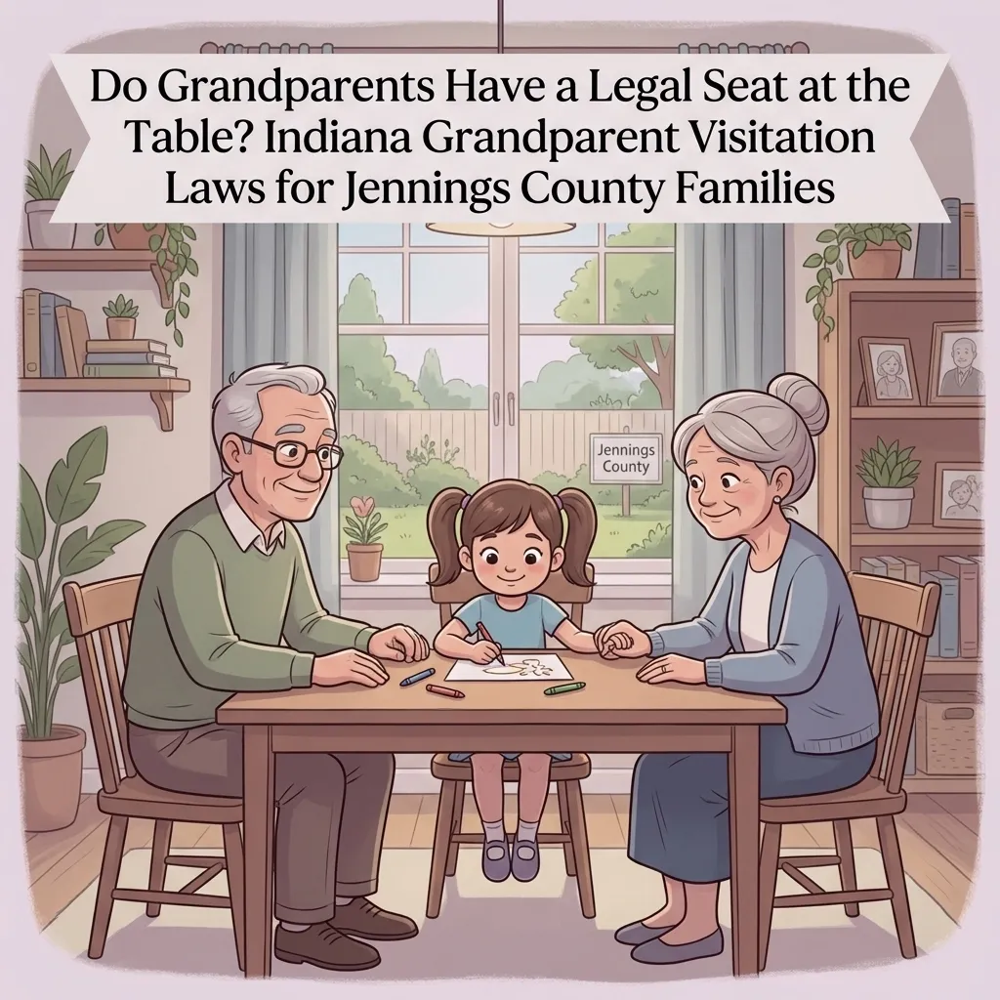
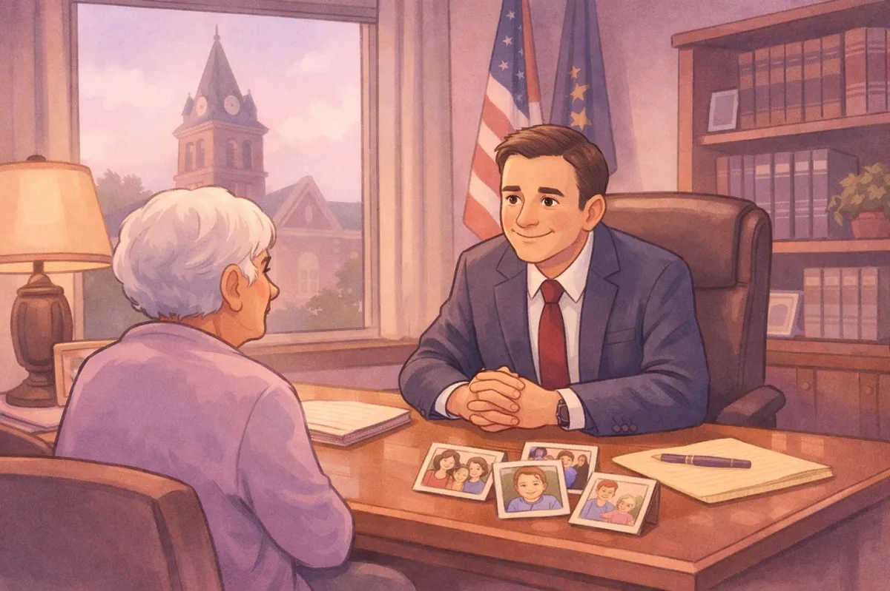

Do Grandparents Have a Legal Seat at the Table? Indiana Grandparent Visitation Laws for Jennings County Families

In a tight-knit community like ours here in Jennings County, whether you are raising a family in North Vernon, farming out in Scipio, or living quietly in Butlerville, family is everything. We rely on our parents to help with the kids, and grandparents often provide the "moral compass" and extra set of hands that keep a household running.
But what happens when that relationship is severed? Whether it is due to a messy divorce, the tragic loss of a parent, or a falling out between adults, many grandparents find themselves cut off from the grandchildren they love.
If you are a grandparent in North Vernon Indiana wondering if you have a legal right to see your grandkids, the answer is: it depends. Indiana law does provide a path for grandparent visitation, but it isn't an automatic right. At Chris Doran Law LLC, I spend a lot of time helping local families navigate these emotional waters. I believe in listening to what you have to say and giving you clear options for your legal needs without the confusing jargon.
Understanding the Indiana Grandparent Visitation Act
Indiana courts generally believe that children benefit from having a relationship with their grandparents. However, the law also protects the rights of parents to raise their children how they see fit. This creates a delicate balance.
Under the Indiana Grandparent Visitation Act, you can only ask the court for visitation if one of these three "gateways" applies to your situation:
The child's parent is deceased. If your son or daughter has passed away, you may have the right to seek visitation with their children.
The child's parents are divorced. If the marriage has been legally dissolved in Indiana, the court has the authority to grant visitation to grandparents.
The child was born out of wedlock. This is a common situation we see in North Vernon and Hayden. However, there is a catch: if you are the paternal grandparent (the father's side), paternity must have been legally established before you can file for visitation.
A Quick Note About Unmarried Parents and Paternity
This point trips up a lot of families. Grandparents can still ask for visitation even if the parents were never married. For paternal grandparents, the key issue is whether the father has been legally recognized as the child's father.
That can happen in a few different ways, such as:
the father being listed on the birth certificate, or
the parents signing paternity paperwork.
Once paternity is established, paternal grandparents can petition the court for visitation under the Indiana Grandparent Visitation Act. In other words, the fact that the parents never married does not automatically block a grandparent case. What matters is whether legal paternity exists.
If the parents are still married to each other and living together, Indiana law generally does not allow a grandparent to sue for visitation. The state assumes that "fit" parents who are together have the right to decide who their children spend time with, even if that decision seems unfair to the grandparents.
The Constitutional "Hurdle": Deference to Parents
It is important to understand a major legal concept that every lawyer in Indiana has to account for. In the famous case Troxel v. Granville, the U.S. Supreme Court ruled that parents have a fundamental right to make decisions regarding the care, custody, and control of their children.
What does this mean for you in a Jennings County courtroom? It means the Judge starts with the presumption that a "fit" parent's decision to limit visitation is in the child's best interest. As a grandparent, the "burden of proof" is on you. You have to prove that visitation is in the child's best interest and, in many cases, show that the parent's decision to cut you off was not reasonable or would harm the child.
I've handled a wide variety of complex legal matters during my tenure, and I've seen how high the stakes are in these cases. We don't just walk into court and ask for time; we have to build a case that respects the law while highlighting the deep bond you have with your grandkids.
What the Court Looks At: "The Best Interests of the Child"
If you meet one of the "gateways" mentioned above, the Jennings County court will then look at several factors to decide if they should order visitation. These include:
The existing relationship. Have you been a constant presence in the child's life? Did you provide childcare while the parents worked in Commiskey or Vernon?
The amount of contact. Have you had meaningful contact with the grandchild in the past?
The parents' reasons. Why is the parent saying no? Is there a legitimate safety concern, or is it just a personal grudge?
The child's schedule. Courts are wary of making a child's life too hectic by adding more "stops" on the weekend.
Practical Steps: When to Talk and When to File
Before you rush to the courthouse in Vernon, I always recommend a few practical steps. As a Jennings County attorney who prefers to solve problems rather than create more drama, here is my advice:
1. Try to Communicate (If Safe). Sometimes a neutral third party or a calm conversation at a local coffee shop can bridge the gap. If the parents are grieving or stressed by a divorce, they might just need time.
2. Consider Mediation. Mediation is a great tool. It allows both sides to sit down with a neutral professional to work out a schedule that everyone can live with. It's often cheaper and much less stressful than a full-blown trial.
3. Build Your Evidence. If talking doesn't work, start gathering your "proof." This includes photos of you with the grandkids, records of birthdays and holidays, and logs of when you last saw or spoke to them. This helps your attorney show the court that a bond truly exists.
4. File the Petition. If all else fails, you file a formal "Petition for Grandparent Visitation." Where to file? Usually, you file in the county where the child lives. If there is already an open divorce or custody case in Jennings County, you typically file your petition under that existing case number.

What to Expect in Jennings County Court
If you've never been to court before, it can be intimidating. I've written a Jennings County Court 101 guide to help folks understand the basics.
In a visitation hearing, you will likely have to testify. You'll tell the judge about your relationship with your grandchildren and why you believe seeing them is important for their well-being. The parents will also have a chance to give their side.
Remember, I wear many hats as your lawyer. My job is to be your voice and to present the facts in a way that the court can clearly see. If you are worried about how to carry yourself, check out my post on how to prepare for a custody hearing, as many of the same principles apply here.
Frequently Asked Questions
Can I get "custody" instead of just visitation? Grandparent visitation is different from custody. Custody (being the primary caregiver) is a much higher bar to reach. Generally, you would have to prove the parents are "unfit" or have abandoned the child. If you are looking for custody, that is a different legal path.
Does it matter if I haven't seen them in a year? It matters, but it doesn't mean you have no rights. If the parent has been intentionally blocking you, we can explain that to the court. The law looks at whether you tried to have meaningful contact.
What if the child is adopted? This is tricky. In Indiana, if a child is adopted by someone other than a stepparent or a close family member, grandparent visitation rights are usually terminated. If a stepparent adopts the child, your rights may still exist. This is a complex area where you definitely need to talk to a lawyer.
How Chris Doran Law LLC Can Help
I know how much it hurts to be kept away from your family. When you come to my office, you aren't just another case file. I'm a small-town lawyer who cares about our community. I offer straightforward advice and I'm honest about what the law can and cannot do.
I don't believe in over-complicating things. If you need a lawyer who will listen to your story and give you a realistic plan, I'm here to help. Whether you're in North Vernon, Scipio, Hayden, or right here in town, we can sit down and figure out the best path forward for your family.
If you are ready to talk about your rights as a grandparent, you can learn more about me on my About Me page or visit my contact page to schedule a time to chat.